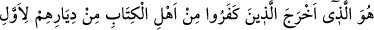

babası Hüyey b. Ahtab, münâfıkların sözlerine aldanarak yaptı.
Bunun üzerine Rasûlullah (a.s.) müminlerle onların üzerine yürüdü. Hz. Ali sancağı
taşıyordu. Rasûlullah (s.a.) liften yuları olan bir merkeb üzerinde idi. Onların
topraklarına geldi ve ikindi namazını arâzîlerinin bir kenarında kıldı. Yahûdiler
kalelerinin üzerine çıkarak taşlar ve oklar atmağa başladılar, kale sokaklarını da
gererek kapattılar, kalelerinin içine kapandılar. Peygamberimiz (s.a.) onları kuşatarak
yirmi bir gün kuşatmayı sürdürdü. Allah onların içine bir korku düşürdü, münâfıkların
da yardımından ümid kesince, barış istemek zorunda kaldılar. Rasûlullah (a.s.) ise her
üç kişiye bir deve üzerine, silahları hâriç ev eşyasından dilediklerini yükleyip yurtlarını
terk ederek gitmeleri dışında hiç bir dileklerini kabul etmedi. Altı yüz deveyi yükleyip
kendilerini süslediler, celâdet izhar edip, defler çalıp şarkılar söyleyerek Medîne
pazarından geçtiler.
Nadiroğulları Şam ve Filistin’den Eriha’ya kadar gittiler. Onlardan iki hane Ebü’l-
Hukayk’ın âilesi ile Hüyey b. Ahtab Hayber’e gittiler. Bir kısmı da Kûfe’ye yakın olan
Hiyra’ya gittiler. Nadiroğullarından iki kişinin dışında İslâmiyeti kabul eden olmadı.
Bunlardan biri Süfyan b. Ümeyr, diğeri Sa’d b. Veheb’tir. Müslüman olmaları üzerine
kaleleri ve malları kendilerine bırakıldı. Bunun üzerine de bu sûre-i celilenin başından
itibaren altı âyet-i kerime nâzil oldu.
Muhammed demiştir ki: Nadiroğullarının sürülmesi hicretin üçüncü yılı
Peygamberimiz (s.a.)’in Uhud savaşından dönüşünde; Kureyzaoğullarının yerlerinin
fethi de, Peygamberimiz (a.s.)’ın hicretin beşinci yılı Ahzab seferinden dönüşünde
olmuştur. Aralarında iki yıl vardır.
İnsanu’l-uyûn adlı eserde şöyle kaydedilmiştir: Nadiroğulları savaşı hicretin
dördüncü yılındadır. Belâ, fethedilen yerden çıkıp ayrılmaktır. Celv kelimesinin aslı,
örtülü bir şeyi açmak ve ortaya çıkmak demektir. Celvetiye tarikatının adı da buradan
alınmıştır. İlâhî sıfatlarla açılıp ortaya çıkmak demektir. Yerinde de târif edildiği gibi
Celâ, çıkmak anlamına gelen huruç’tan daha özel bir mânâ taşır. Çünkü Celâ ancak
toplu halde çıkmak ve çıkarmakta kullanıldığı halde, huruç toplu ve fert hâlinde çıkmak
anlamlarında kullanılır. Celâ âilece, çoluk çocukla çıkmak ve çıkarılmak; huruç ise
bunun tersidir. Âilece çıkmayı gerektirmez. Bu bakımdan aralarında fark olduğu
söylenmiştir.
Âlimler derler ki, zamanımızda savaş hâlinde bulunulan kimselerin bir şarta
bağlanmadan yurtlarından çıkıp gitmeleri karşılığında sözleşme yapmak câiz değildir.
Bu İslâm’ın ilk günlerinde idi. Sonra bu nesh edilmiştir. Zamanımızda ise, ya savaşılma
veya esir edilmeleri, ya da cizye adıyla onlara vergi vermeleri şartıyla sözleşme
yapılır.